Модуль 5: новые схемы
Снимки реального Flutter renderer: ширина экрана 360 logical px, изображение 320 px,
текст интерфейса ×1,3. Для оценки размеров используйте масштаб браузера 100%.
Подписи внутри PNG остаются неизменными. Это не физический Android smoke.
Семь сохранённых схем пилота · Отчёт
Урок 3 · Постоянная и включаемая ветви, 30/15/31 · light 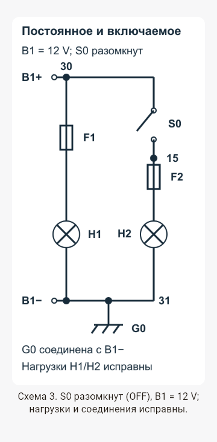
Урок 3 · Постоянная и включаемая ветви, 30/15/31 · dark 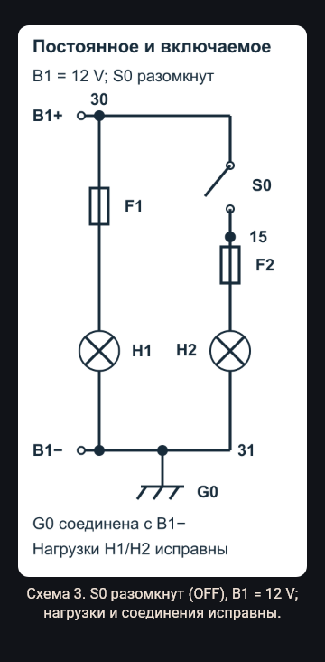
Урок 6 · F1 → K1:30/87 → X1:2 → P/Q → H1 → G1 · light 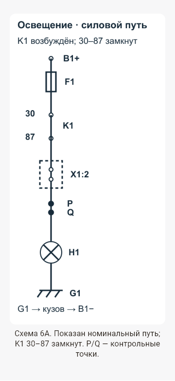
Урок 6 · F1 → K1:30/87 → X1:2 → P/Q → H1 → G1 · dark 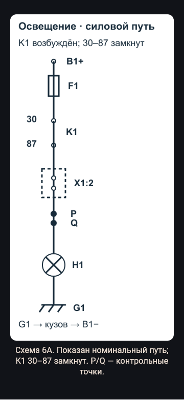
Урок 6 · F2 → S1 → K1:86/85 → G2 · light 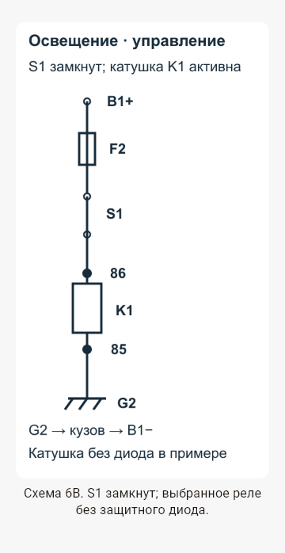
Урок 6 · F2 → S1 → K1:86/85 → G2 · dark 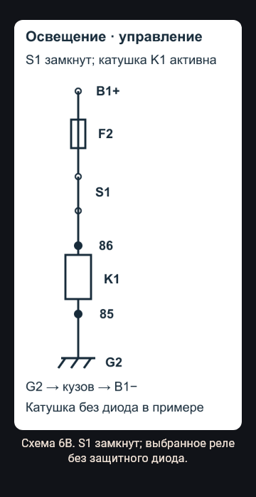
Урок 7 · K3 и M1; обратный путь двигателя · light 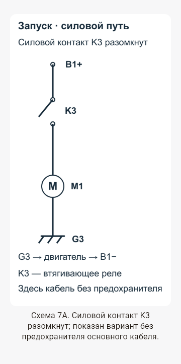
Урок 7 · K3 и M1; обратный путь двигателя · dark 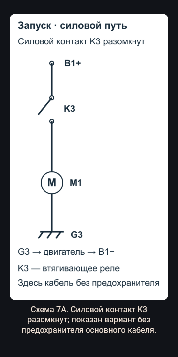
Урок 7 · Разрешение START/P/N; K2 → X3:1 → 50 · light 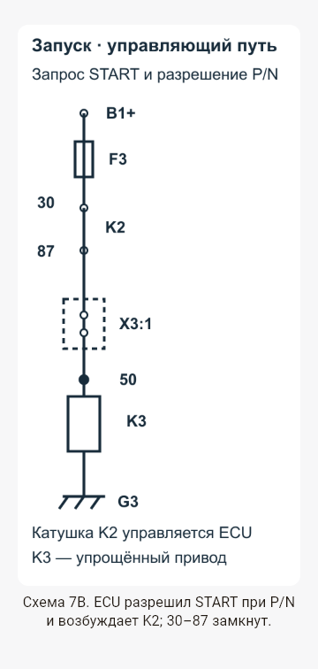
Урок 7 · Разрешение START/P/N; K2 → X3:1 → 50 · dark 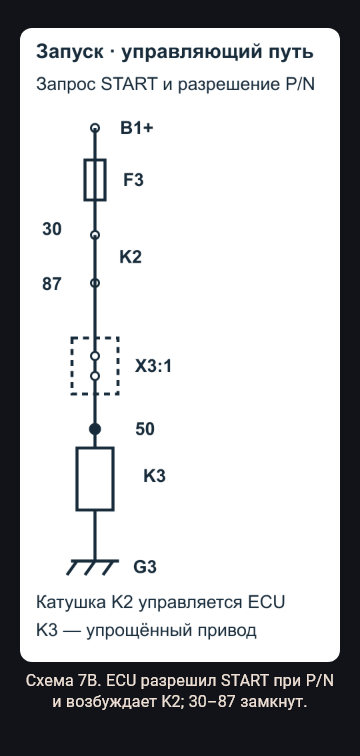
Урок 8 · G1 B+, F4, B1; точки A/B/C/D · light 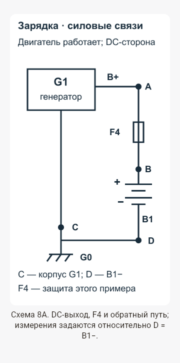
Урок 8 · G1 B+, F4, B1; точки A/B/C/D · dark 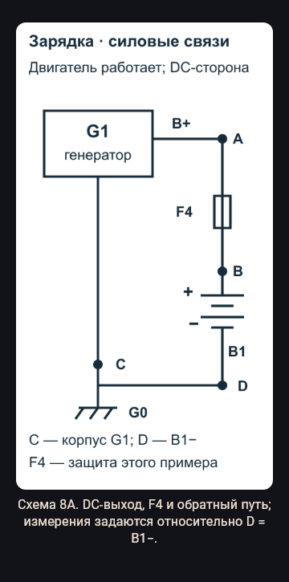
Урок 8 · Отдельные варианты L/лампа и LIN · light 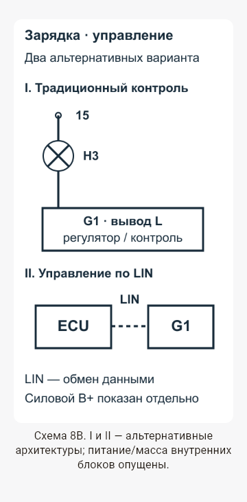
Урок 8 · Отдельные варианты L/лампа и LIN · dark 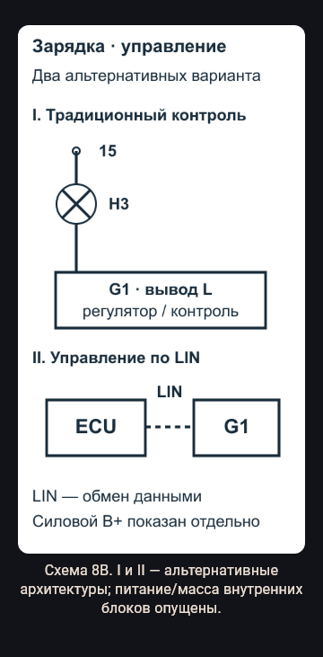
Урок 9 · Границы P/Q для доказательства обрыва · light 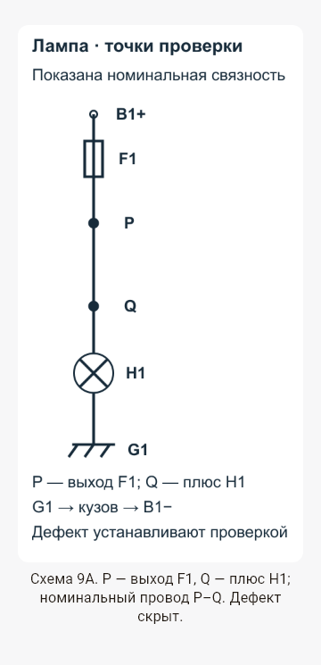
Урок 9 · Границы P/Q для доказательства обрыва · dark 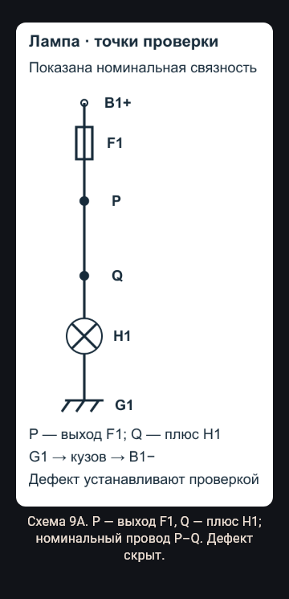
Урок 9 · T–N, контакт Rк, потери под нагрузкой · light 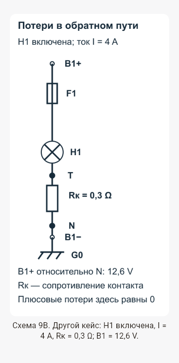
Урок 9 · T–N, контакт Rк, потери под нагрузкой · dark 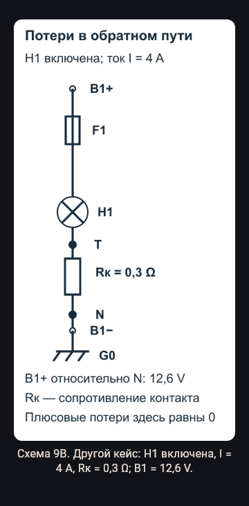
Урок 10 · Новая компоновка независимых ветвей · light 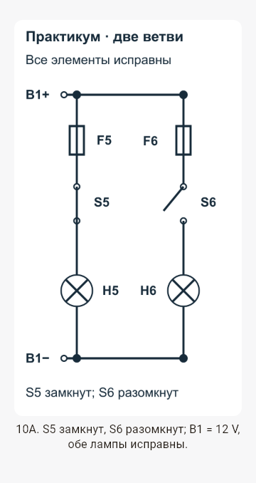
Урок 10 · Новая компоновка независимых ветвей · dark 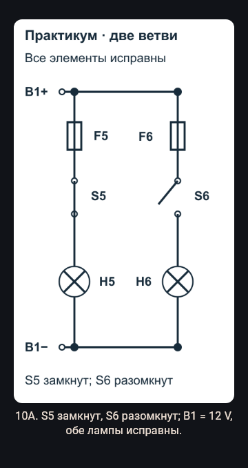
Урок 10 · Дефект X9:6 и исправный X9:4 · light 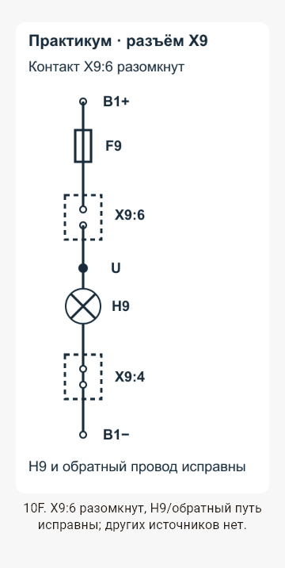
Урок 10 · Дефект X9:6 и исправный X9:4 · dark 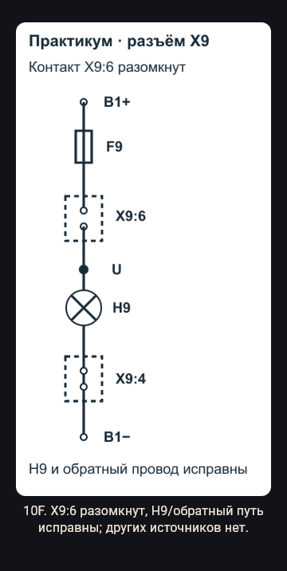